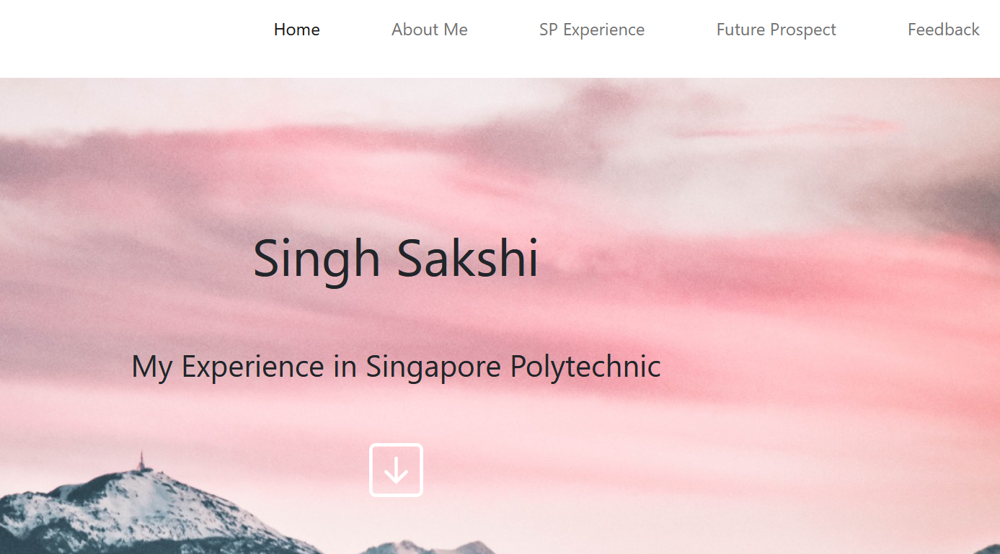
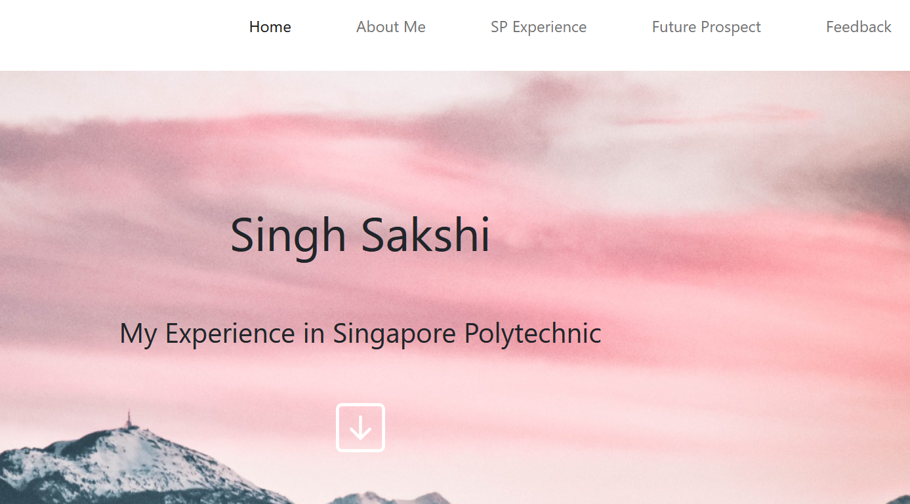
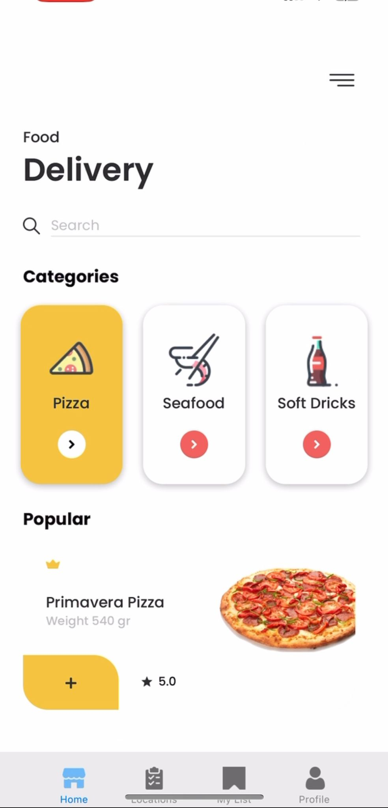
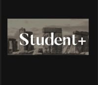
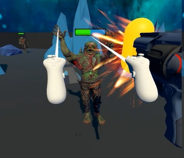
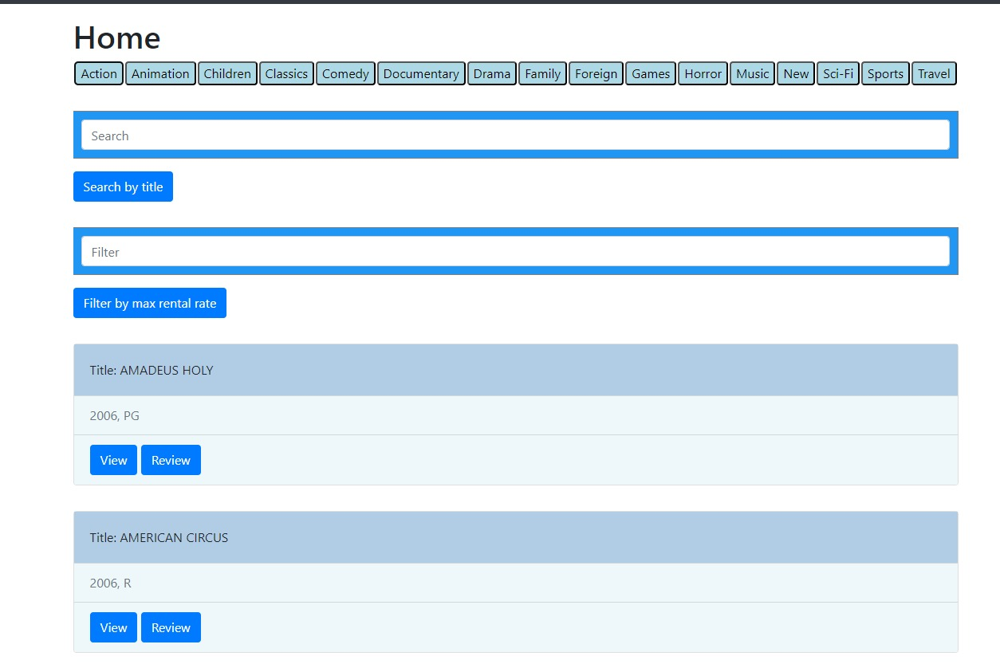
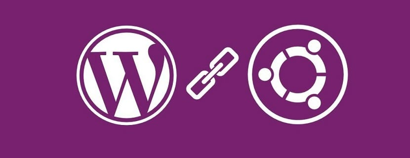

Hi, I'm Sakshi, an IT enthusiast with a passion for solving tech challenges. From crafting user-friendly interfaces to mastering database architecture, I'm dedicated to making technology work for people. Let's collaborate and bring IT projects to life
 

Designed a dynamic frontend website that creatively highlighted my interests, academic achievements, and skills using captivating animations such as caroursel slide show , flip cards and more . Developed using a combination of HTML, JavaScript, and CSS, the project achieved an exceptional grade of A.

Demonstrated expertise in designing and developing a feature-rich food delivery app, earning an outstanding grade of A. Key project highlights include robust user authentication, real-time location tracking, seamless Firebase integration for user and order management, and an intuitive restaurant listing system with a user-friendly favorites feature..

The website underwent a transformation as it was migrated and integrated with AWS services such as Lambda, Cloud9, EC2, DynamoDb, and RDS. This transitioned the website from a local development environment to a cloud-based one. This project achieved an A grade.

In this project, my teammates and I effectively designed interactive interfaces prototypes for web and mobile platforms, emphasizing a positive user experience. Our initiative centered around creating a prototype app (Student+) designed to optimize productivity for students, incorporating user interviews, rigorous testing, and subsequent improvements. Additionally, we extended the project by developing a tablet-specific prototype of the app to cater to diverse user preferences and devices.I achieved an "A" grade, highlighting commitment to design and user interaction excellence in this project.

My temate and I developed a virtual reality game in which players embarked on a quest to retrieve a vital orb and prevent reality from being annihilated by the nefarious super-villain, Malvus. Players were armed with a variety of weapons, a protective shield, and an arsenal of unique attacks, all essential for their journey. To emerge victorious in the game, players had to conquer a horde of formidable minions and ultimately confront the highly intelligent villain, Malvus, in an epic battle of wits and skill.As a testament to the project's success, I achieved an "A".

Working together cohesively, we applied the Scrum framework to identify and address issues within a furniture website. This collaborative effort was conducted in two distinct phases, during which we meticulously documented our progress and findings in detailed reports.

I leveraged my expertise in server-side programming, SQL database management, and scripting languages to develop a dynamic website backend that delivers robust functionality and ensures seamless user experiences. The implemented features encompass persistent login/logout, advanced DVD search capabilities by title or category (with optional budget constraints), detailed DVD information display, admin-exclusive features like actor and customer addition, and stringent JWT-based access rights for web APIs. Furthermore, users can provide reviews, complete with scores and comments, which are accessible to the public on individual DVD details pages.

I set up a virtual machine and installed Apache, PHP, and MySQL. User groups and permissions were managed for security. Then, I installed, configured, and monitored a WordPress website with the root document at '/var/www/html/'. Apache's document root was aligned accordingly, and I established proper permissions for 'www-data' and 'webdev.' I also created a MySQL user, 'wordpress-user-', with the necessary database rights for the WordPress site, named 'wordpress-db-'. This ensured a secure and well-functioning WordPress environment.